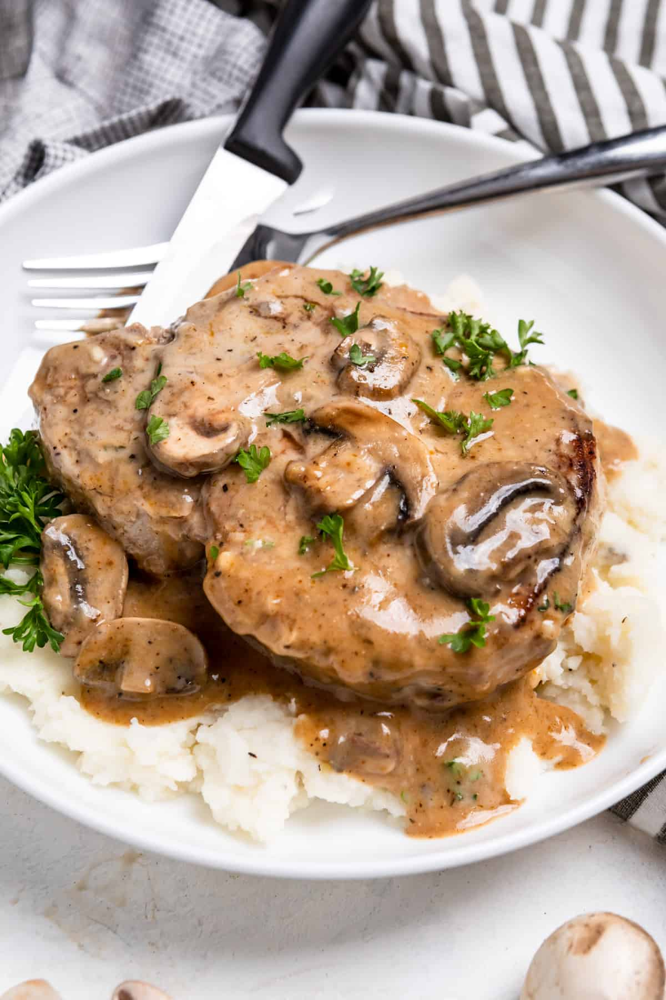

Mushroom Soup Pork Chops

Ingredients Needed
Directions
- Season Pork Chop and put olive oil in pan
- Heat pan on high and place Pork Chops in
- Cook until golden brown on each side
- Pour Mushroom soup into pan and cook until it starts boiling
- Turn heat down to simmer and cook until soup is thick and pork chops are thoroughly
You can use mashed potatoes are your choice of side to go with this dish.
ENJOY